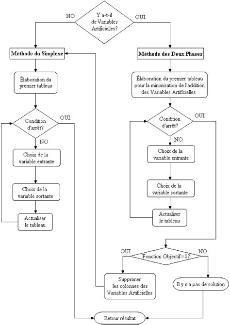

Cours Visuel : La Méthode du Simplexe
📚 Introduction
La méthode du simplexe est un algorithme qui permet de résoudre des problèmes d’optimisation linéaire.
Elle consiste à passer d’une solution réalisable à une autre, en améliorant progressivement la valeur de
la fonction objectif.
Schéma du principe :

Le simplexe se déplace de sommet en sommet sur le polytope
des solutions réalisables.
🧩 Étapes détaillées de la méthode du simplexe
-
Étape 1 : Mise sous forme standard
-
But : Transformer toutes les contraintes en égalités et s’assurer que toutes les
variables sont positives.
Comment :
- Pour chaque contrainte de type ≤, ajouter une variable d’écart (slack) s
≥ 0.
Exemple : x + y ≤ 4 devient x + y + s₁ = 4,
s₁ ≥ 0
- Pour chaque contrainte de type ≥, soustraire une variable de surplus et
ajouter une variable artificielle si besoin.
Exemple : 2x + y ≥ 5 devient 2x + y - s₂ +
a₁ = 5, s₂, a₁ ≥ 0
- Pour chaque contrainte d’égalité =, ajouter une variable artificielle si
nécessaire.
- Si la fonction objectif est à minimiser, la multiplier par -1 pour la maximiser.
Pourquoi ? Le simplexe ne fonctionne qu’avec des égalités et des variables positives.
Les variables d’écart et artificielles servent à obtenir une solution de base réalisable
pour démarrer l’algorithme.
-
Étape 2 : Construction du tableau initial du simplexe
-
But : Représenter le système sous forme de tableau pour appliquer l’algorithme.
-
Comment :
- Chaque ligne du tableau correspond à une contrainte (avec les variables de base
à gauche).
- Chaque colonne correspond à une variable (x, y, s₁, s₂, a₁, ...).
- La dernière colonne (RHS) contient les seconds membres des contraintes.
- La dernière ligne est la fonction objectif (Z ou W), avec les coefficients
opposés (pour maximiser).
Exemple :
Pour le problème :
Maximiser Z = 3x + 2y
x + y ≤ 4
2x + y ≤ 5
x, y ≥ 0
On obtient le tableau :
| Base |
x |
y |
s₁ |
s₂ |
RHS |
| s₁ |
1 |
1 |
1 |
0 |
4 |
| s₂ |
2 |
1 |
0 |
1 |
5 |
| Z |
-3 |
-2 |
0 |
0 |
0 |
-
Étape 3 : Identification du pivot (colonne et ligne)
-
Colonne pivot (variable entrante) :
- On regarde la dernière ligne (Z).
- On choisit la colonne avec le coefficient le plus négatif (pour maximiser).
- C’est la variable qui va entrer dans la base (améliore le plus la fonction
objectif).
-
Ligne pivot (variable sortante) :
- Pour chaque ligne, on calcule le ratio RHS / coefficient de la colonne pivot
(seulement si ce coefficient est > 0).
- On choisit la plus petite valeur positive : c’est la ligne pivot.
- La variable de cette ligne sort de la base.
Exemple :
Dans le tableau ci-dessus :
- Colonne pivot = x (car -3 est le plus négatif dans Z)
- Ratios : 4/1 = 4 (s₁), 5/2 = 2.5 (s₂) → Ligne pivot = s₂
- Le pivot est donc la case (s₂, x) = 2
-
Étape 4 : Opération de pivot (mise à jour du tableau)
-
But : Mettre à jour le tableau pour que la variable entrante remplace la variable
sortante dans la base.
-
Comment :
- Diviser toute la ligne pivot par la valeur du pivot (pour obtenir 1 à
l’intersection).
- Pour chaque autre ligne (y compris Z), soustraire un multiple de la nouvelle
ligne pivot pour obtenir 0 dans la colonne pivot.
Exemple :
- On divise la ligne s₂ par 2 (le pivot) pour obtenir 1 en x.
- On met à zéro la colonne x dans la ligne s₁ et dans Z.
- On obtient un nouveau tableau avec x dans la base à la place de s₂.
-
Étape 5 : Répéter jusqu’à optimalité
-
But : Continuer à améliorer la solution jusqu’à ce qu’on ne puisse plus.
-
Comment :
- Retourner à l’étape 3 : chercher une nouvelle colonne pivot (si possible).
- Si tous les coefficients de la ligne Z sont positifs ou nuls (pour maximiser),
la solution est optimale.
- Lire la solution dans la colonne RHS pour les variables de base, les autres sont
à zéro.
Exemple :
- On refait le processus avec la nouvelle base.
- Quand il n’y a plus de coefficient négatif dans Z, on a trouvé la solution optimale.
🔎 Exemple complet pas à pas avec tous les tableaux
Problème :
Maximiser Z = 3x + 2y
Sous contraintes :
x + y ≤ 4
2x + y ≤ 5
x, y ≥ 0
Forme standard :
x + y + s₁ = 4
2x + y + s₂ = 5
x, y, s₁, s₂ ≥ 0
Tableau 0 (initial) :
| Base |
x |
y |
s₁ |
s₂ |
RHS |
| s₁ |
1 |
1 |
1 |
0 |
4 |
| s₂ |
2 |
1 |
0 |
1 |
5 |
| Z |
-3 |
-2 |
0 |
0 |
0 |
Explications :
- On ajoute les variables d'écart s₁ et s₂ pour transformer les inégalités en égalités.
- La ligne Z contient les coefficients opposés de la fonction objectif (car on maximise).
- On cherche la colonne la plus négative dans Z : ici x (-3), c'est la colonne pivot.
Calcul des ratios pour choisir la ligne pivot :
- Ligne 1 (s₁) : 4 / 1 = 4
- Ligne 2 (s₂) : 5 / 2 = 2.5 ← plus petit ratio
Ligne pivot = s₂
Pivot = 2 (intersection x/s₂)
Tableau 1 (après 1er pivot sur x/s₂) :
| Base |
x |
y |
s₁ |
s₂ |
RHS |
| s₁ |
0 |
0.5 |
1 |
-0.5 |
1.5 |
| x |
1 |
0.5 |
0 |
0.5 |
2.5 |
| Z |
0 |
-0.5 |
0 |
1.5 |
7.5 |
Explications :
- On divise la ligne pivot (s₂) par le pivot (2) pour obtenir 1 en x.
- On annule la colonne x dans les autres lignes par combinaison linéaire.
- La nouvelle base est (s₁, x).
- On cherche la colonne la plus négative dans Z : y (-0.5), c'est la nouvelle colonne
pivot.
Calcul des ratios pour le second pivot :
- Ligne 1 (s₁) : 1.5 / 0.5 = 3 ← plus petit ratio
- Ligne 2 (x) : 2.5 / 0.5 = 5
Ligne pivot = s₁
Pivot = 0.5 (intersection y/s₁)
Tableau 2 (après 2e pivot sur y/s₁) :
| Base |
x |
y |
s₁ |
s₂ |
RHS |
| y |
0 |
1 |
2 |
-1 |
3 |
| x |
1 |
0 |
-1 |
1 |
1 |
| Z |
0 |
0 |
1 |
1 |
9 |
Explications :
- On divise la ligne pivot (s₁) par le pivot (0.5) pour obtenir 1 en y.
- On annule la colonne y dans les autres lignes par combinaison linéaire.
- La nouvelle base est (y, x).
- Il n'y a plus de coefficient négatif dans Z : la solution est optimale.
Lecture de la solution finale :
- Variables de base : x = 1, y = 3
- Variables hors base : s₁ = 0, s₂ = 0
- Valeur optimale : Z = 9
Résumé visuel du choix du pivot :
- Colonne pivot : la plus négative dans Z
- Ligne pivot : plus petit ratio RHS / coeff
pivot
- Pivot : intersection colonne/ligne pivot